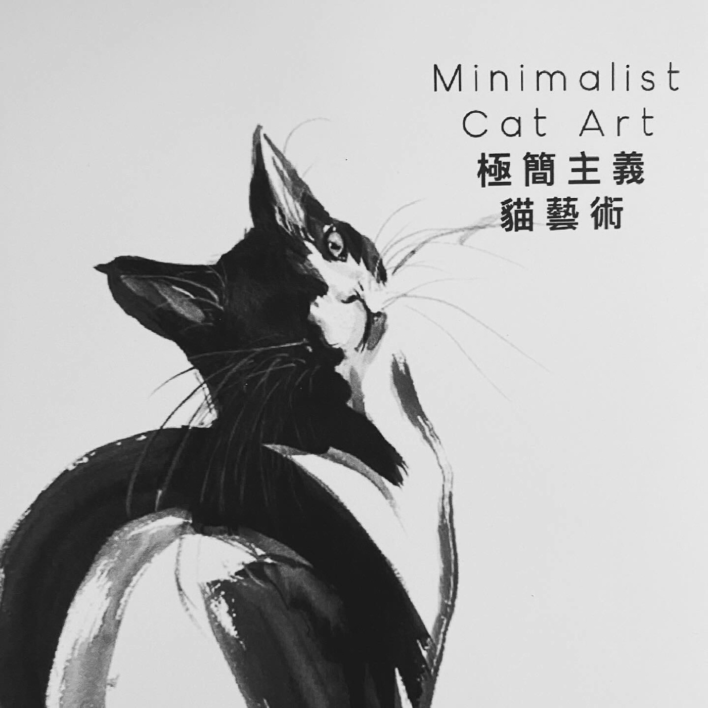
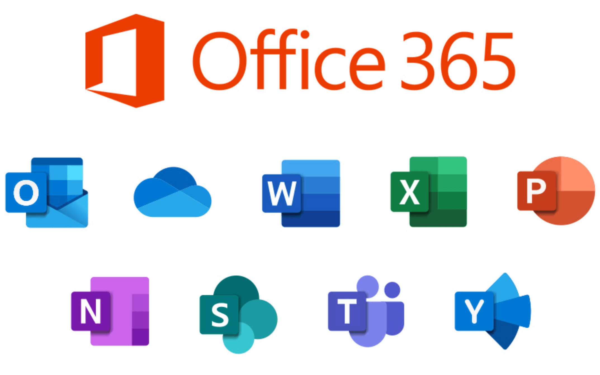
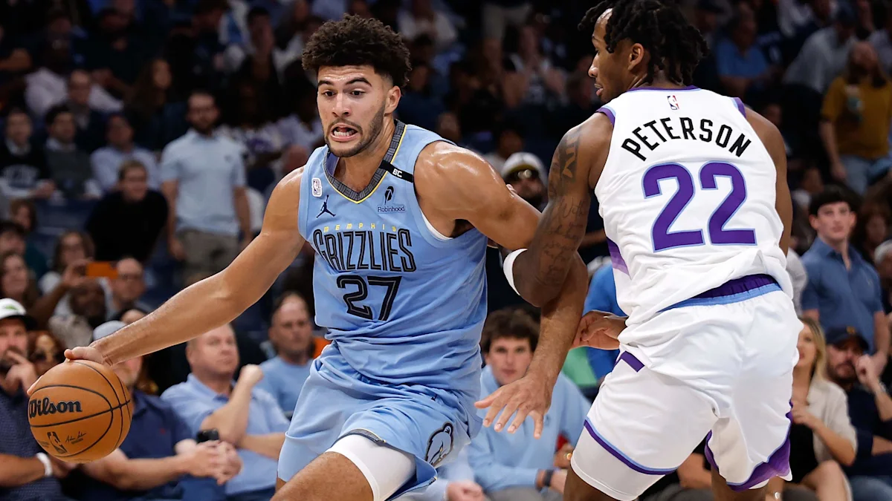
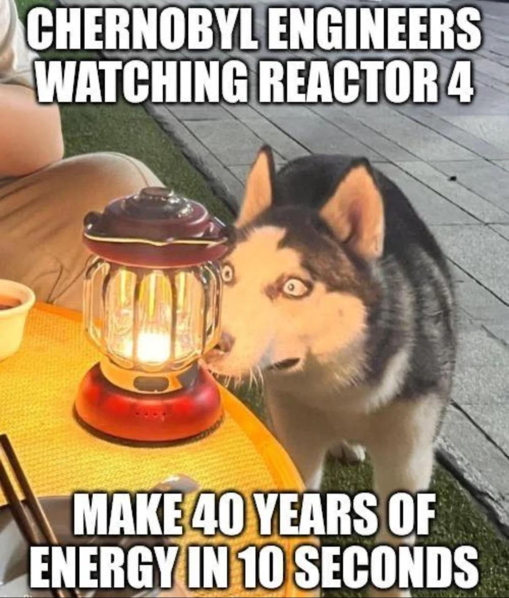

#fyp #santorini
TikTok
#fyp #santorini
by @collinaesthetics — Sound: original sound - longsyrics.
Today across YouTube, TikTok, X, Reddit, Google Trends, Know Your Meme · LinkedIn limited · Facebook unavailable · coverage & method
The ten biggest stories of the day, in order.
by @collinaesthetics — Sound: original sound - longsyrics.

by Know Your Meme — Meme entry surfacing on Know Your Meme's front page today.

Trending topic on X in the United States right now.
by r/memes /u/_FIZZRIX_ — Top of r/memes today on Reddit.

by Know Your Meme — Meme entry surfacing on Know Your Meme's front page today.
by r/popular /u/Negative_1by12_aura — Top of r/popular today on Reddit.
by LinkedIn News — LinkedIn let people ask me anything about building Listen Labs . My answers:

Trending topic on X in the United States right now.

Trending topic on X in the United States right now.

via NBA.com

by SMii7Y — Gaming video.

by Warner Bros. — Film & Animation video.

by HarryStylesVEVO — Music video.

by r/memes /u/pajdbdksnsjsjsjs — Top of r/memes today on Reddit.
by r/memes /u/RaccoonCityTacos — Top of r/memes today on Reddit.
by Know Your Meme — Meme entry surfacing on Know Your Meme's front page today.
by Know Your Meme — Meme entry surfacing on Know Your Meme's front page today.